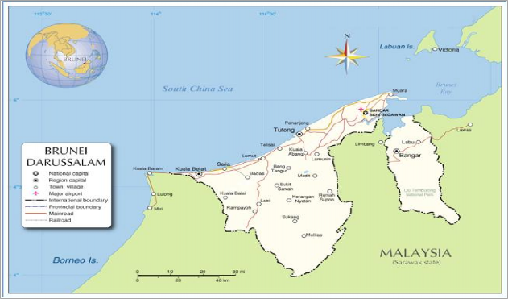
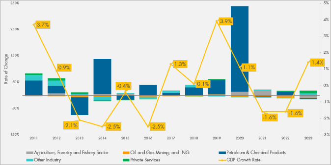
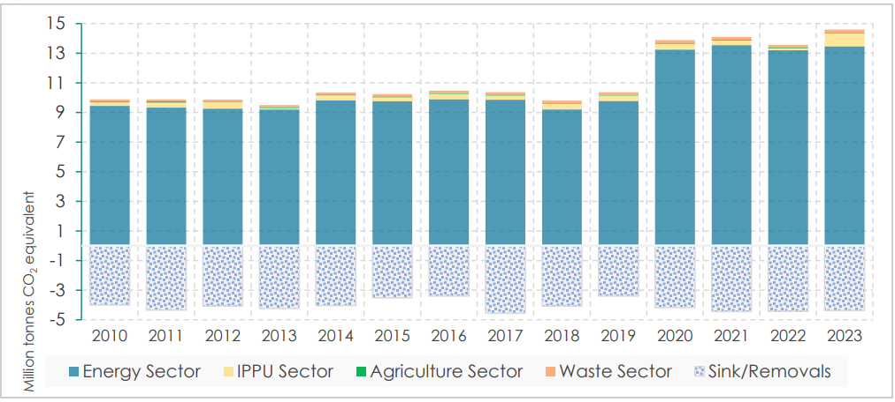

Under the United Nations Framework Convention on Climate Change
Brunei Darussalam’s 3rd Nationally Determined Contribution (NDC 3.0)
September 2025
PREFACE
The Government of Brunei Darussalam is pleased to submit its third Nationally Determined Contribution (NDC 3.0) as part of its reporting obligation to United Nations Framework Convention on Climate Change (UNFCCC).
Brunei’s third NDC commits to a 20% reduction relative to a Business- As-Usual (BAU) scenario by 2035, using 2015 as the baseline year. This commitment is made in the context of global climate actions, particularly those of developed countries, reflecting principles of equity and differentiated responsibilities.
As a developing nation, Brunei aims to balance infrastructure and energy needs with GHG mitigation through ten strategic approaches outlined in its Brunei Darussalam National Climate Change Policy (BNCCP). The BNCCP sets forth six primary mitigation approaches: targeting reductions in industrial emissions, increasing forest cover, minimising emissions from land transportation, boosting the share of renewable energy (RE), reducing emissions from power generation, and reducing emissions from waste. In addition, it includes four cross-cutting strategies: exploring carbon pricing mechanisms, enhancing adaptation and resilience to climate impacts, maintaining a comprehensive carbon inventory for effective tracking and policymaking, and fostering climate awareness and education among the public. These strategies are all aimed at achieving sustainable development while effectively addressing the challenges posed by climate change.
The Honourable Dato Seri Setia Dr. Awang Haji Mohd. Amin Liew bin Abdullah Minister at The Prime Minister’s Office and Minister of Finance & Economy II Co-chair of the Brunei Darussalam National Council on Climate Change Negara Brunei Darussalam
ACKNOWLEDGEMENT
This document presents Brunei Darussalam’s third Nationally Determined Contributions (NDC 3.0) in accordance with the Paris Agreement Articles 3, 4.2, 4.3 and 4.9, which urges parties to prepare, communicate and maintain their successive NDCs every five years, reflecting its highest possible ambition, informed by the outcomes of the global stocktake, and reflecting its common but differentiated responsibilities and respective capabilities, in the light of different national circumstances.
Updating the country’s NDCs followed a highly informative and participatory process that involved consultation with the relevant stakeholders, mainly line-ministries departments, parastatals, the private sector, and non-governmental organisations. These stakeholders were consulted on a one-on-one basis and through validation workshops. Furthermore, a thorough desk review was undertaken to ensure consistency with the country’s national priorities and targets.
The Brunei Climate Change Office (BCCO) wishes to encourage all stakeholders to continue contributing their respective roles in mitigating Greenhouse Gas (GHG) emissions and accounting as this will require concerted efforts from both national and international stakeholders through provision of technical and financial support. The collaboration demonstrated in the preparation of the NDC, if continued, will assist the country in meeting its emission reduction ambitions and contribute to the global goal on holding the increase in global average temperature to well below 2 °C above preindustrial levels.
Gas |
Explanation |
CH4 |
Methane |
CO2 |
Carbon dioxide |
HFCs |
Hydrofluorocarbons |
N2O |
Nitrous Oxide |
PFC |
Perfluorocarbons |
SF6 |
Sulphur Hexafluoride |
Unit |
Explanation |
°C |
Degree Celsius |
CO2e |
Carbon Dioxide equivalent |
Mt |
Million tonnes |
MtCO2e |
Million tonnes of carbon dioxide equivalent |
Abbreviations |
Explanation |
AFOLU |
Agriculture, Forestry and Other Land-Use |
AR5 |
Fifth Assessment Report |
ARWG |
Adaptation and Resilience Working Group |
BAU |
Business As Usual |
BCCO |
Brunei Climate Change Office |
BNCCC |
Brunei Darussalam National Council on Climate Change |
BNCCP |
Brunei Darussalam National Climate Change Policy |
BTR |
Biennial Transparency Report |
COP |
Conference of Parties |
D |
Default IPCC methodology and emission factor |
DDS |
Department of Drainage and Sewerage |
DEPR |
Department of Environment, Parks and Recreation |
DEPS |
Department of Economic Planning and Statistics |
DoAA |
Department of Agriculture and Agrifood |
DOE |
Department of Energy |
EF |
Emission Factor |
ETF |
Enhanced Transparency Framework |
EVWG |
Electric Vehicle Working Group |
ExComm |
Executive Committee on Climate Change |
FRA |
Forest Resources Assessment |
GDP |
Gross Domestic Product |
GHG |
Greenhouse Gas |
GWP |
Global Warming Potential |
ICT |
Information and communications technology |
IEWG |
Industrial Emissions Working Group |
INDC |
Intended Nationally Determined Contribution |
IPCC |
Intergovernmental Panel on Climate Change |
IPPU |
Industrial Processes and Product Use |
LNG |
Liquefied Natural Gas |
LULUCF |
Land Use, Land-Use Change and Forestry |
MD |
Managing Director |
MPG |
Modalities, Procedures & Guidelines |
MOFE |
Ministry of Finance and Economy |
MPRT |
Ministry of Primary Resources and Tourism |
MRV |
Measurement, Reporting and Verification |
NAP |
National Adaptation Plan |
NGO |
Non-Governmental Organization |
NDC |
Nationally Determined Contribution |
SWDS |
Solid Waste Disposal Sites |
1.1 Introduction
In line with its obligations under Article 4, paragraph 2 of the Paris Agreement which is to prepare, communicate and maintain successive nationally determined contributions, and in accordance with decision 1/CP.21, Brunei Darussalam has developed and submitted its third Nationally Determined Contribution (NDC 3.0) to the United Nations Framework Convention on Climate Change (UNFCCC) Secretariat. This document presents and outlines Brunei’s post 2020 climate actions and reflects its ongoing commitment to enhancing climate ambition every five years as mandated by Article 4, paragraph 9 of the Paris Agreement.
Brunei Darussalam’s first Nationally Determined Contribution (NDC 1.0) was submitted to UNFCCC in 2015 in the form of an Intended Nationally Determined Contribution (INDC)1. Brunei further submitted its Second Nationally Determined Contribution (NDC 2.0) to the UNFCCC on 30 December 2020 committing itself to a reduction in greenhouse gas (GHG) emissions by 20% relative to Business-As-Usual (BAU) levels in 2030, using 2015 as the baseline year.
Brunei Darussalam’s NDC 3.0, covering the implementation period 2026–2035, is based on the BAU projection for 2035, which remains consistent with the projections set out in NDC 2.0 to maintain continuity and comparability across submissions. Ongoing sectoral assessments will provide updated data and are expected to be incorporated in subsequent reporting cycles. Building on the foundation of the 2020 NDC (2.0), the NDC 3.0 introduces both enhanced and new commitments, supported by the latest data and developed through an inclusive process. It integrates national climate goals with existing frameworks such as the Wawasan 2035, Brunei Darussalam National Climate Change Policy (BNCCP)2, Energy Masterplan and etc. These strategies collectively offer a comprehensive plan for sustainable development, embedding climate resilience into economic and social planning. These efforts not only advance the implementation of the Paris Agreement but also help drive progress toward Brunei’s Sustainable Development Goals (SDGs).
While Brunei Darussalam’s GHG emissions are relatively low on a global scale, the country is acutely vulnerable to the adverse effects of climate change. Observable climate shifts in Brunei include a warming trend of approximately 0.25°C and a rise in annual rainfall by 100mm per decade. These changes have contributed to more frequent, unpredictable and severe flash floods, forest fires, strong winds, and landslides. These climate-related challenges threaten Brunei Darussalam’s natural environment, economic stability, and the well-being of its population.
Recognising the need to remain actively engaged in both global mitigation and adaptation efforts, Brunei remains fully committed to fulfilling its obligations as a party to the Paris Agreement, delivering on its NDC commitments, and achieving its net-zero ambitions. To this end, the country will continue to take significant steps to advance its mitigation, adaptation, and climate planning initiatives.
1.2 National Circumstances
1.2.1 Geographical and Physical Context
Brunei Darussalam is a small Southeast Asian nation covering 5,765 square kilometres and located on the northern coast of the island of Borneo, bordered by the South China Sea to the north and surrounded by the Malaysian State of Sarawak on three sides. Brunei experiences a tropical rainforest climate characterised by high humidity, heavy rainfall, and consistently warm temperatures throughout the year. While generally free from natural disasters such as earthquakes and typhoons, the country does experience seasonal monsoons contributing to substantial rainfall.
Figure 1.1 Map of Brunei Darussalam

Source: Nations Online Project NOP (2022)
1.2.2 Climate
Brunei has an equatorial climate characterised by a uniform high temperature, high humidity and heavy rainfall. Weather is influenced by the monsoon systems known as northeast monsoon and southwest monsoon. The northeast monsoon season occurs from December to March and southwest monsoon season occurs from June to September. The two seasons are separated by two transitional periods known as inter-monsoon periods of which the first occurs in April and May, while the second period occurs in October and November.
The country generally experiences wet conditions throughout the year with average annual rainfall of 3,000 millimetres (mm) (2010-2014). Being in an equatorial climate country, the temperature is hot throughout the year. Temperatures range from 23 to 32 degree Celsius (°C), while rainfall varies from 2,500 mm annually on the coast to 7,500 mm in the interior. There is no distinct wet season. However, Brunei is already experiencing evident changes in climate pattern. The country’s mean temperature has already increased by 1.25 °C since 1970 with the warmest year recorded in 2019. Brunei also recorded a new highest daily rainfall in 2019 and highest cases for forest fire in 2019. At present, biodiversity loss is estimated to be around 40%.
1.2.3 Population
The population of Brunei sits roughly at 450,500 in 2023 with an average annual growth rate of approximately 1% with most residents living in urban areas, particularly in the capital city, Bandar Seri Begawan, located in the Brunei-Muara District. The nation enjoys a high standard of living, largely due to significant revenues from oil and gas production, which dominate its economy and account for a substantial portion of its GDP, government revenue, and exports. This economic reliance on fossil fuels is a critical factor in its national circumstances, especially in the context of climate change mitigation and adaptation efforts.
1.2.4 Economy
Brunei’s economy has traditionally relied heavily on its natural resources, particularly the oil and gas sector. In 2023, the oil and gas industry (upstream, downstream, power and trade) accounted for 58% of GDP, and about 92% of the nation’s exports. The primary exports from this sector are crude oil, petroleum products, and Liquified Natural Gas (LNG). While there has been progress in diversifying the economy away from oil and gas, the wealth generated from this sector continues to play a crucial role in developing other areas of the economy. Additionally, Brunei’s major downstream industries remain heavily tied to oil and gas. A significant portion of the country’s economic activities also benefits from substantial subsidies funded by revenues from the oil and gas industry. In its efforts to diversify away from oil and gas and promote sustainable economic growth, Brunei has implemented several long-term strategies. The Vision 2035 Strategy3 focuses on diversifying the economy, enhancing private sector growth, and fostering investments in non-oil sectors. The Ministry of Finance and Economy (MOFE), in its 2021 Economic Blueprint4 for Brunei, outlined five key areas for economic diversification: downstream oil and gas, food, tourism, information and communications technology (ICT), and services, indicating a strategic shift towards reducing economic dependency on hydrocarbons.
The trend in real GDP growth is also indicative of the consequence of production of oil and gas. As shown in Figure 1.2, the positive economic growth of the economy is heavily dependent on the level of oil and gas production, except when other sectors, such as the downstream sector, experience significant expansion. The effects of the dependence on oil and gas are not only limited to the structure of the economy, but also government finance. The Government relies primarily on revenue from taxes, incomes, and royalties from oil and gas companies. Over the recent years, the country has experienced budget deficit except in 2018/2019 and 2022/2023, which were driven by high oil and gas prices during these periods.
Figure 1.2 Real GDP and Sectoral Composition Annual Rate of Growth, 2011-2023

Source: Department of Economic Planning and Statistics, 2024.
1.3 Brunei Darussalam GHG Emissions (2010-2023)
Brunei’s total gross GHG emissions stood at 14.60 MtCO2e (Million tonnes CO 2 equivalent) in 2023. As illustrated in Figure 1.2, emissions have steadily risen over a decade, from 9.88 MT CO2e in 2010 at an annual growth rate of 3.1%. The Energy Sector has consistently been the most significant emission source since 2010, driven by activities in the oil and gas industry, transport, and electricity generation. In 2023, 92% of total national emissions came from the Energy Sector, followed by IPPU (6.1%), Waste (1.3%) and Agriculture (0.3%). The emission spikes for Energy Sector in 2020 was due to the commissioning of Brunei’s first coal-fired powerplant for industrial purposes. Emissions from IPPU also saw a significant increase due to the inclusion of emissions from Brunei Fertiliser Industry (BFI) in the inventory. When the net emissions from LULUCF are excluded from the national totals, the overall emissions amounted to 10.2 MtCO2e in 2023.
GHG removals and emissions are estimated based on changes in above and below ground biomass, dead organic matter, and soil organic carbon on Brunei’s forestland. Emissions from forestland were estimated from carbon loss due to human activities such as deforestation and forest fires. GHG removals for the period of 2010-2023 is illustrated in Figure 1.3, indicating fairly constant net removals in the sector throughout the inventory period. The activity data are derived from forest cover assessment and national forest inventory5.

Figure 1.3 Trends of GHG Emissions and Removals, 2010 – 2023
Brunei Darussalam intends to reduce its GHG emissions by 20% relative to Business-As-Usual (BAU) levels by 2035
The information below is to help provide further clarity, transparency and understanding of
Brunei Darussalam’s third Nationally Determined Contribution for the timeframe 2026-2035.
|
1. Quantified information on the reference point, including, as appropriate, a base year |
||
|
1a. |
Reference year(s), base year(s), reference period(s) or other starting point(s); |
The reference year used in Brunei Darussalam’s NDC 3.0 is 2015, the same as Brunei Darussalam second NDC submission (NDC 2.0). Revisions to the baseline data were made to reflect corrections and recommendations arising from a third- party verification process. |
|
1b. |
Quantifiable information on the reference indicators, their values in the reference year(s), base year(s), reference period(s) or other starting point(s), and, as applicable, in the target year; |
Darussalam’s GHG emissions are projected to reach 30.8 million tonnes of carbon dioxide equivalent (MtCO2e) by 2035. This projection reflects anticipated economic and demographic growth, assuming no additional mitigation measures beyond those already in place. |
|
1c. |
For strategies, plans and actions referred to in Art 4, para 6, of the Paris Agreement, or policies and measures as components of nationally determined contributions where paragraph 1(b) above is not applicable, Parties to provide other relevant information; |
N/A |
|
1d. |
Target relative to the reference indicator, expressed numerically, for example, in percentage or amount of reduction; |
Brunei Darussalam’s new NDC target will be to reduce GHG emissions by 20% relative to a Business-As-Usual (BAU) scenario by 2035, using 2015 as the baseline year. Emissions are tracked in terms of absolute GHG in MtCO2e . These emissions are compared against a Business as Usual (BAU) scenario, which represents the projected emissions trajectory in the absence of any additional mitigation measures or policy interventions, and integrated into the overall NDC target. This approach helps to quantify the impact of implemented actions, assess progress toward emission reduction targets, and highlight the deviation from the baseline trajectory. The new target is conditional and contingent on technological maturity and effective international cooperation. Brunei’s ability to fulfil its NDC, like all developing country Parties, will depend on the provision of support for Means of Implementation (MOI) – Finance, Technology and Capacity Building from Developed Countries in addition to appropriate economic circumstances for Brunei. |
|
1e. |
Information on sources of data used in quantifying the reference point(s); |
The sources of data used in quantifying the reference points are the following:
|
|
1f. |
Information on the circumstances under which the Party may update the values of the reference indicators; |
Brunei may update the base year data in future NDCs on the basis of 1) Substantial changes in national circumstances, such as new industrial facilities or significant shifts in population or GDP projections, that materially affect baseline or reference projections. 2) Improved data availability or quality of current inventory gaps especially for IPPU and AFOLU Sectors, 3) adoption of new policies or strategies that materially affect sectoral outputs, emissions intensity and 4) additional technical analysis from a new forest inventory assessment to be completed by Q4 2025. The NDC commitment will be delivered through strategies outlined in the Brunei Darussalam National Climate Change Policy (BNCCP), encompassing actions across key sectors such as energy, land transport, forestry, and waste. The Government of Brunei is in the process of updating the Brunei National Climate Change Policy (BNCCP) to ensure its continued relevance in addressing emerging challenges, aligning with the latest scientific findings, international obligations under the Paris Agreement, and the country’s long-term vision for sustainable and climate- resilient development. |
2. Time frames and/or periods for implementation |
||
|
2a. |
Time frame and/or period for implementation, including start and end date, consistent with any further relevant decision adopted by the CMA; |
01 January 2026 – 31 December 2035 |
|
2b. |
Whether it is a single-year or multi-year target, as applicable; |
Single Year Target for 2035. |
3. Scope and Coverage |
||
|
3a. |
General description of the target; |
Economy-wide total GHG emissions reduction relative to BAU levels by 2035. |
|
3b. |
Sectors, gases, categories and pools covered by the nationally determined contribution, including, as applicable, consistent with IPCC guidelines; |
The estimation of GHG emissions is categorised into four sectors: Energy, Industrial Processes and Product Use (IPPU), Agriculture, Forestry and Other Land Use (AFOLU), and Waste. The geographic coverage of the GHG inventory is complete. It covers Brunei’s entire territorial boundary. The greenhouse gases covered in the inventory included the following:
|
|
3c. |
How the Party has taken into consideration paragraphs 31(c) and (d) of decision 1/CP.21; |
All categories of anthropogenic emissions and removals included. |
|
3d. |
Mitigation co-benefits resulting from Parties’ adaptation actions and/or economic diversification plans, including description of specific projects, measures and initiatives of Parties’ adaptation actions and/or economic diversification plans. |
As Brunei is still in the early stages of formulating its NAP and noting that its iterative nature, Brunei might identify and develop projects and strategies with mitigation co- benefits on adaptation actions, provided adequate financial, technical and capacity building support moving forward. |
4. Planning Process |
||
|
4a. |
Information on the planning processes that the Party undertook to prepare its NDC and, if available, on the Party’s implementation plans, including, as appropriate: |
|
|
4a (i). |
Domestic institutional arrangements, public participation and engagement with local communities and indigenous peoples, in a gender-responsive manner; |
Climate change planning and implementation are led by climate change Lead Agencies , which consist of ministries designated to take primary responsibility for coordinating and implementing climate change policies, strategies, and actions within a country (See Annex 1 for full list of coordinating ministries and agencies responsible for climate actions) The governance structure includes the Brunei Darussalam National Council on Climate Change (BNCCC), which provides the highest level of strategic direction in addressing climate change. Co-chaired by the Minister at The Prime Minister’s Office and Minister of Finance and Economy II, and the Minister of Development, the BNCCC's members include representatives from various ministries. Supporting the BNCCC is the Executive Committee on Climate Change (ExComm), chaired by the Deputy Minister (Energy), Prime Minister’s Office and consist of Permanent Secretaries, Chief Executive Officers (CEOs), and Managing Directors (MDs) from relevant public, private, and non-governmental organizations (NGOs). BCCO serves as secretariat for both BNCCC and the ExComm. The ExComm oversees the Industrial Emissions Working Group (IEWG), Electric Vehicle Working Group (EVWG), and Adaptation and Resilience Working Group (ARWG). Membership in these committees spans across government, non-government, and academic bodies, ensuring a multi-sectoral approach to climate change mitigation and adaptation. Any decisions taken at ExComm and other bodies require endorsement by the BNCCC. Over the past years Brunei has been implementing strategies under the BNCCP to support its climate goals, including launching a Mandatory Reporting Directive on Greenhouse Gas in April 2023, requiring all facilities that emit and/or remove GHG, including government departments and private companies, to report their GHG emissions quarterly and annually starting in 2023. In addition, Lead Agencies have been progressively updating their respective policies to adapt to the evolving climate change landscape and align with emerging national and international commitments. In preparing NDC 3.0, the Brunei Government, led by BCCO, conducted a comprehensive review of the existing NDC, including an assessment of progress made, lessons learned, gaps identified, and expected future developments that may impact projections of its GHG emissions. Consultations with Lead Agencies and other key stakeholders across government, industry, and NGOs were then initiated to ensure alignment with national priorities and inclusivity in decision-making. Based on this evidence and engagement, updated targets and actions were proposed, taking into account current capabilities, future projections, and international climate commitments. The preliminary NDC underwent stakeholder and ExComm consultations, was endorsed by the BNCCC, and approved by the Office of His Majesty the Sultan and Yang Di-Pertuan of Brunei Darussalam. |
|
4a (ii). |
Contextual matters, including, inter alia, as appropriate: National Circumstances (geography, climate, economy, sustainable development and poverty eradication) |
The information is provided in Chapter 1 (Background) of this NDC report. |
|
4a (iii). |
Best practices and experience related to the preparation of the nationally determined contribution |
Enhance Transparency and MRV From the ad hoc nature of GHG inventory reporting and undefined institutional and procedural arrangement prior to 2023, the national GHG inventory reporting system in Brunei has greatly improved with the launch of a Mandatory Reporting Directive on Greenhouse Gas in April 2023, requiring all facilities that emit and/or remove GHG, including government departments and private companies to report their GHG emissions quarterly and annually starting in 2023. This directive aligns with Article 4, Paragraphs 13-14 of the Paris Agreement, which emphasizes the need for transparency, accuracy, and consistency in accounting and tracking progress toward NDCs by mandating comprehensive GHG reporting, Brunei takes an important step in fulfilling its commitment to provide reliable and transparent data for monitoring emissions and removals. Requiring companies to submit emissions reports is key to maintaining a transparent and reliable carbon inventory, which depends on a robust measuring, reporting, and verification (MRV) system, as outlined in the Modalities, Procedures, and Guidelines (MPGs) of the Paris Agreement. To support this effort, a centralized online reporting platform is being developed to standardize data reporting and provide a user-friendly overview of greenhouse gas data. Under the Directive, Brunei adopted a Whole-of-Nation approach towards national GHG inventory preparation, which leverage on sectoral pool of expertise. The respective Sector Leads for Energy, Industrial Processes and Product Use (IPPU), Agriculture, Land-Use, Land-Use Change and Forestry (LULUCF) and Waste Sectors are responsible to consolidate GHG reports from all data providers and perform quality control and quality assurance activities, among others. |
|
4a (iv). |
Other contextual aspiration & priorities acknowledged when joining the Paris Agreement; |
The support of domestic and international Financial, Technical, and Capacity-building (FTC) resources is crucial to help enable effective climate action. These forms of support help bridge existing gaps in expertise, infrastructure, and financing which currently are hindering/delaying implementation of various climate strategies. With adequate FTC support such as Art 10.4 (Technology mechanism) and 10.5 (promote innovation), Brunei can enhance their institutional capacities, deploy low-carbon technologies, develop robust GHG inventories, and improve transparency in reporting. Moreover, technical assistance and capacity-building efforts empower the government and industry as well as other local stakeholders to plan, implement, and monitor climate actions more effectively, ensuring long-term sustainability and resilience. Ultimately, FTC support is a cornerstone for equitable climate progress and the successful delivery of Brunei’s NDC, in line with Article 4.5 of the Paris Agreement, where “Support shall be provided to developing country Parties for the implementation of this Article, in accordance with Articles 9, 10, and 11, recognizing that enhanced support for developing country Parties will allow for higher ambition in their actions.”. |
|
4b. |
Other contextual aspirations and priorities acknowledged when joining the Paris Agreement; |
|
|
4b. |
Specific info applicable to Party, including regional economic integrations organizations and their member State, that have reached an agreement to act jointly under Article 4, paragraph 2, of the Paris Agreement, including the Parties that agreed to act jointly and the terms of the agreement, in accordance with Article 4, paragraphs 16–18, of the Paris Agreement; |
While Brunei Darussalam continues to advocate for the timely formulation and communication LT-LEDS by developed country Parties, Brunei as a developing country Party, will communicate its long-term ambitions primarily through its NDCs submitted every five years. |
|
4c. |
How the Party’s preparation of its NDC has been informed by the outcomes of the global stocktake, in accordance with Article 4, paragraph 9, of the Paris Agreement; |
Brunei Darussalam’s NDC commits to quantified emission reductions consistent with global pathways to limit the global average temperature rise to well below 2 °C above pre-industrial levels and to pursue efforts to limit the increase to 1.5 °C. These efforts are undertaken in the context of a just and orderly transition towards a low- carbon and climate-resilient economy, while maintaining a responsible approach to the continued role of the oil, gas, and petrochemical industries in supporting economic diversification and national development. Recognizing its status as a developing country Party with a high degree of economic reliance on hydrocarbons, Brunei acknowledges the role of transitional fuels in facilitating the energy transition and ensuring national energy security. These national circumstances have been an important consideration in determining the scope, ambition, and implementation pathway of Brunei’s NDC target. |
|
4d (i). |
Each Party with an NDC under Article 4 of the Paris Agreement that consists of adaptation action and/or economic diversification plans resulting in mitigation co-benefits consistent with Article 4, paragraph 7, of the Paris Agreement to submit information on: |
The effects on vulnerability, resilience, economic transformation and standards of living were considered in developing the revised NDC. |
|
4d (ii). |
Specific projects, measures & activities to be implemented to contribute to mitigation co-benefits, including information on adaptation plans that also yield mitigation co-benefits, which may cover, but are not limited to, key sectors, such as energy, resources, water resources, coastal resources, human settlements & urban planning, agriculture & forestry; & economic diversification actions, which may cover, but are not limited to, sectors such as manufacturing & industry, energy & mining, transport/communication, construction, tourism, real estate, agriculture & fisheries; |
As Brunei is still in the early stages of formulating its National Adaptation Plan (NAP) and noting its iterative nature, Brunei might identify and develop projects and strategies with mitigation co-benefits on adaptation actions, provided adequate financial, technical and capacity building support moving forward. Brunei has classified 6 key sectors as national priorities for building resilience and enhancing preparedness in the National Adaptation Plan (NAP), namely: Agriculture and Food Security, Biodiversity and Environment, Health and Livelihood, Infrastructure and Urban Resilience, Marine Protection and Coastal Resilience, as well as Water Resources. By strategically focusing on these sectors, the country stands posed to not only navigate the complexities of environmental changes, but also thrive in the face of adversity. |
|
5. Assumptions and methodological approaches, including those for estimating and accounting for anthropogenic greenhouse gas emissions and, as appropriate, removals: |
||
|
5a. |
Assumptions and methodological approach used for accounting for anthropogenic greenhouse gas emissions and removals corresponding to the Party’s NDC, consistent with 1/CP.21, paragraph 31, and accounting guidance adopted by the CMA; |
Brunei’s GHG Inventory was prepared in accordance with the requirements of the UNFCCC using 2006 IPCC guidelines for National Greenhouse Gas Inventories, supplemented by 2019 IPCC Refinement and utilises the associated IPCC software. The methodology and dataset used were improved on the previous inventories. Some new datasets were used and period recalculations were performed, mostly for the new inventory years. |
|
5b. |
Assumptions and methodological approach used for accounting for the implementation of policies and measures or strategies in the NDC; |
N/A |
|
5c. |
If applicable, information on how the Party will consider existing methods and guidance under the Convention to account for anthropogenic emissions and removals, in accordance with Article 4, paragraph 14, of the Paris Agreement as appropriate; |
Brunei's current GHG inventory has been prepared in accordance with Decision 24/CP.19 and is based on the 2006 IPCC Guidelines for National Greenhouse Gas Inventories. In line with Article 4, paragraph 14, of the Paris Agreement, Brunei will continue to apply these established methods and guidance under the Convention when accounting for anthropogenic emissions and removals for the purpose of tracking progress towards its NDC. Any methodological improvements or recalculations will be documented and explained to maintain clarity, transparency, and understanding, as required under the Enhanced Transparency Framework. This is undertaken in line with the Enhanced Transparency Framework (ETF) under Article 13 of the Paris Agreement, which requires Parties to provide transparent, consistent, comparable, complete, and accurate information to track progress towards their nationally determined contributions. |
|
5d. |
IPCC methodologies and metrics used for estimating anthropogenic GHG emissions and removals; |
Brunei generally applies the Tier 1 IPCC methodology across most sectors, except in cases where available national data enables the adoption of a higher-tier methods.
The 100-year time-horizon Global Warming Potential (GWP) values from the Fifth Assessment Report (AR5) were used to convert the estimated CH4 and N2O emissions to Carbon dioxide equivalent (CO2e). |
|
5e. |
Sector, category or activity specific assumptions, methodologies and approaches consistent with IPCC guidance, as appropriate, including, as applicable: |
|
|
5e (i). |
Approach to addressing emissions and subsequent removals from natural disturbances on managed lands; |
Brunei applies IPCC Gain-Loss Method (Tier 1) to estimate emissions and removals from natural disturbances in managed lands. Activity data on forest land area are sourced from Brunei Darussalam’s Forest Resources Assessment (FRA) 2015 Country Report. Additionally, Brunei’s forest inventory is expected to be updated by end of 2025 which also includes data on biomass carbon stock. Activity data for wood/fuelwood, as well as forest fires are provided by relevant Government agencies through Sector Lead. Brunei uses a hybrid approach for estimating carbon stock changes: Tier 1 for activity data, and Tier 2 for biomass growth rates, combining IPCC default factors with region-specific values across forest types. Carbon losses are estimated using data on wood and fuelwood removals and disturbances such as forest fires. The annual change in carbon stocks in biomass is then estimated by considering the net CO2 removals, which involves adding up the annual carbon gain with carbon loss in biomass. |
|
5e (ii). |
Approach used to account for emissions and removals from harvested wood products (HWP); |
Due to limited data availability and technical capacity, emissions and removals from HWPs are not estimated. |
|
5e (iii). |
Approach used to address the effects of age-class structure in forests; |
Brunei applies Tier 1 approach consistent with the 2006 IPCC Guidelines. The country is characterized by tropical rainforests and majority of which are mature with stands generally older than 20 years. |
|
5f. |
Other assumptions and methodological approaches used for understanding the nationally determined contribution and, if applicable, estimating corresponding emissions and removals, including: |
|
|
5f (i). |
How the reference indicators, baselines &/or reference levels, including, where applicable, sector, category or activity specific reference levels, are constructed, including, for example, key parameters, assumptions, definitions, methodologies, data sources and models used; |
Not applicable. Please see Section 5(a-e) for assumptions and methodologies used. |
|
5f (ii). |
For Parties with NDC that contain non GHG components, information on assumptions & methodological approach used in relation to those components as applicable; |
Not applicable. |
|
5f (iii). |
For climate forcers included in nationally determined contributions not covered by IPCC guidelines, information on how the climate forcers are estimated; |
Not applicable. |
|
5f (iv). |
Further technical info as necessary; |
Not applicable. |
|
5g. |
The intention to use voluntary cooperation under Article 6 of the Paris Agreement, if applicable; |
Brunei is currently studying the feasibility of Voluntary Cooperation as part of its Carbon Pricing assessment. While still in its early days, Brunei has inked an MoU to identify Article 6.2 cooperation with a neighboring country. |
|
5h. |
The intention to engage in REDD+ initiatives, if applicable. |
N/A |
|
6. How the Party considers that its NDC is fair and ambitious in light of its national circumstances |
||
|
6a. |
How the Party considers that its NDC is fair and ambitious in light of its national circumstances. |
Brunei’s contribution is considered in the context of other countries' mitigation actions, especially those of the Annex-I Parties of the UNFCCC. This aligns with Article 3.1 of the Convention, which calls for climate action based on equity and common but differentiated responsibilities and capabilities . As a developing country, meeting its needs will require scaling up infrastructure and energy use. Brunei’s commitments under the Convention and the Paris Agreement aim to ensure efficient growth that allows for development while contributing to mitigating GHG emissions. Brunei Darussalam’s commitment reflects its national circumstances and priorities, recognizing the vital contribution of the oil and gas sector to economic development, while simultaneously advancing efforts to transition towards a low-carbon and sustainable economy. As climate impacts intensify, Brunei Darussalam requires the mean to strengthen its adaptive capacity and resilience to safeguard its people, environment, infrastructure, and economy. |
|
6b. |
Fairness considerations, including reflecting on equity; |
As per 6a |
|
6c. |
How the Party has addressed Article 4, paragraph 3, of the Paris Agreement; |
Brunei Darussalam has ensured that its updated NDC represents a progression beyond its first NDC and reflects the country’s highest possible ambition in light of its national circumstances, capabilities, and development priorities. The target year for its emission reduction commitment has been extended to 2035, with the same 20% reduction from BAU levels, thereby covering a longer timeframe and providing greater cumulative emission reductions over the implementation period. These enhancements reflect Brunei’s highest possible ambition while balancing the need to safeguard its economic stability, food security, and social welfare as a hydrocarbon-dependent developing country, consistent with the principles of equity and common but differentiated responsibilities under the Paris Agreement. |
|
6d. |
How the Party has addressed Article 4, paragraph 4, of the Paris Agreement; |
Brunei’s updated target is to be viewed in the context of Brunei’s small and developing economy and the inherent limitations in natural, financial, technological, and capacity (FTC) needed to implement the required emissions reduction measures. Brunei plans to expand its scope of its NDC by including two new sub-sectors 1) AFOLU and 2) IPPU and aims to further broaden its coverage to additional sectors and sub-sectors. Progress toward economy-wide targets remains conditional on the availability of capacity- building support and enhanced resources for data collection. |
|
6e. |
How the Party has addressed Article 4, paragraph 6, of the Paris Agreement; |
Although the NDC primarily focuses on mitigation, the country’s adaptation strategies along with considerations of potential limits to adaptation that could lead to loss and damage are detailed in Brunei’s National Adaptation Plan (NAP). |
|
7. How the NDC contributes towards achieving the objectives of the Convention as set out in its Article 2 |
||
|
7a. |
How the NDC contributes towards achieving the objective of the Convention as set out in its Article 2; |
Brunei Darussalam remains fully committed to global climate action. As a responsible member of the international community, Brunei is implementing a whole- of-nation approach to address the climate crisis through the lens of economic pragmatism, one that reflects its national circumstances as a developing country Party while contributing meaningfully to global efforts under the UNFCCC This commitment directly supports the Convention’s objective, as set out in its Article 2, by pursuing actions that contribute to the stabilization of greenhouse gas concentrations at levels that prevent dangerous anthropogenic interference with the climate system. Through the Brunei Darussalam National Climate Change Policy (BNCCP), adopted in 2020, the country is implementing strategies aimed at achieving a 20% reduction in greenhouse gas emissions relative to BAU levels by 2035, while conserving up to 55% of its landmass as pristine rainforest. These actions contribute to the global temperature goal and help safeguard food security, protect ecosystem integrity, and promote sustainable economic development within the timeframe envisioned by the Convention. |
|
7b. |
How the NDC contributes towards Article 2, paragraph 1(a), and Article 4, paragraph 1, of the Paris Agreement; |
Brunei Darussalam’s NDC contributes to Article 2, paragraph 1(a), of the Paris Agreement by committing to quantified emission reductions and sustainable land management measures that align with global pathways to limit temperature rise to well below 2 °C above pre- industrial levels and pursue efforts to limit the increase to 1.5 °C. These efforts include transitioning towards a low- carbon and climate-resilient economy while maintaining a responsible approach to the continued role of oil, gas, and petrochemical industries in funding economic diversification and national development. |
AREA |
SECTOR |
MINISTRIES/GOVERNMENT AGENCIES |
Greenhouse Inventory |
All IPCC Sectors |
|
Mitigation |
Energy |
|
Industrial Processes |
|
|
Transport |
Infocommunications |
|
Forestry |
Tourism |
|
Land-Use Change |
Development |
|
Agriculture |
Primary Resources and Tourism |
|
Waste |
Ministry of Development |
|
Adaptation |
Infrastructure & Urban Resilience |
|
Health & Livelihood |
Home Affairs |
|
Biodiversity & Environment |
|
|
Agriculture & Food Security |
|
|
|
Marine Protection & Coastal Resilience |
|
|
Water Resources |
|